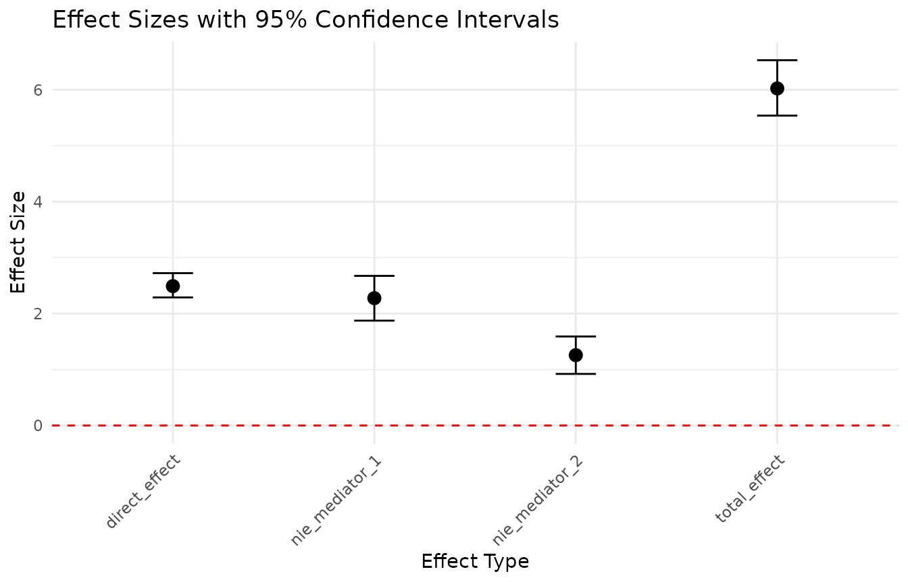
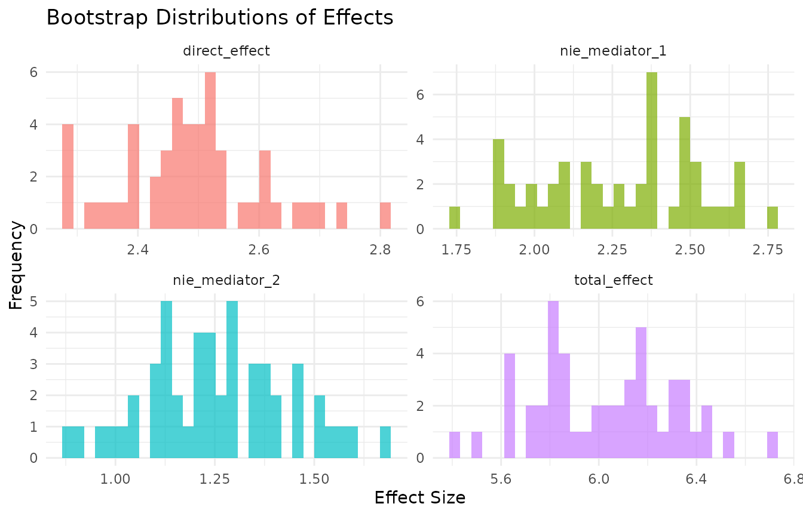

Why BriDGE?
Randomized controlled trials (RCTs) tell you whether an intervention works. They are rarely designed to tell you why and how it works — which mediators carry the effect, whether relationships are nonlinear, and whether your theoretical causal model is actually consistent with the data.
BriDGE implements the protocol described in the companion paper (Veltri & Banerjee, in press, Behavior Research Methods), combining:
- A researcher’s DAG — your theoretical causal model of the experiment.
- Causal discovery — structure learning constrained by experimental design facts (the randomized treatment can affect other variables, but nothing can cause the treatment).
- GAM-based mediation analysis — direct and indirect effects estimated with flexible smooth functions instead of rigid linear terms.
- Bootstrap inference and sensitivity checks — so effects come with uncertainty and robustness information.
This vignette walks through the full workflow on synthetic data where the ground truth is known.
1. Data
bridge_generate_data() generates a synthetic two-arm RCT
with a binary treatment, two mediators, and a continuous
outcome. The data-generating process deliberately includes
nonlinearities (a quadratic mediator effect, a mediator–mediator
interaction, and treatment-by-mediator interactions), mirroring the
simulation study in the paper.
data <- bridge_generate_data(n = 500, nonlinear_strength = 0.5, seed = 42)
head(data)
#> treatment mediator_1 mediator_2 outcome
#> 1 1 -0.5958091 -0.42367693 -0.4621926
#> 2 1 0.5845306 0.72092027 5.4078035
#> 3 0 -1.3655693 2.26691818 0.8324208
#> 4 1 1.2769379 1.30136688 6.0416663
#> 5 1 1.9175428 -0.04574683 5.1907383
#> 6 1 0.1093537 1.39950397 4.2066008With your own data you need: a two-level treatment factor (the first factor level is taken as control, the second as treated), numeric mediators, a numeric outcome, and no missing values in the analysis variables:
2. Causal discovery: does the data agree with your DAG?
bridge_discover() learns a DAG from the data while
enforcing what we know by design: edges from the treatment to each
mediator are whitelisted (randomization guarantees the treatment is
upstream), and any edge into the treatment is blacklisted.
discovery <- bridge_discover(
data = data,
treatment = "treatment",
mediators = c("mediator_1", "mediator_2"),
outcome = "outcome",
method = "mmhc" # also: "hc", "pc"
)
discovery$comparison
#> From To Researcher Discovered
#> 1 mediator_1 outcome TRUE TRUE
#> 2 mediator_2 outcome TRUE FALSE
#> 3 treatment mediator_1 TRUE TRUE
#> 4 treatment mediator_2 TRUE TRUE
#> 5 treatment outcome TRUE TRUEEach row is an edge; Researcher marks edges in your
assumed DAG (treatment to each mediator and the outcome, each mediator
to the outcome), Discovered marks edges the algorithm
found. Read disagreements as hypotheses to examine, not
verdicts: an edge the algorithm finds between mediators, for
example, suggests your parallel-mediator theory may miss a
mediator-to-mediator pathway. Discovery on discretized data is also
sensitive to binning choices, so treat low-stability edges with caution
(see the paper’s discussion of arc-strength stability).
You can plot both structures:
3. Mediation analysis with GAMs
bridge_mediate() decomposes the treatment effect using
counterfactual prediction from an outcome GAM with smooth terms for each
mediator:
-
direct_effect— the natural direct effect: treatment’s effect on the outcome holding mediators at their control-condition values. -
nie_<mediator>— the indirect effect through each mediator: the outcome change produced by shifting that mediator (and only that one) from its control to its treated value. -
total_effect— treatment’s overall effect with all mediators responding.
Confidence intervals come from bootstrap resampling. We use a small number of bootstraps here to keep the vignette fast — use 500–2000 in real analyses.
mediation <- bridge_mediate(
data = data,
treatment = "treatment",
mediators = c("mediator_1", "mediator_2"),
outcome = "outcome",
n_bootstraps = 50, # use >= 500 in practice
nonlinear = TRUE, # GAM smooths for mediator-outcome links
parallel = FALSE, # TRUE recommended on your machine
seed = 42
)
for (effect in names(mediation$summaries)) {
s <- mediation$summaries[[effect]]
cat(sprintf("%-16s % .3f [% .3f, % .3f]\n",
effect, s$mean, s$ci_lower, s$ci_upper))
}
#> direct_effect 2.491 [ 2.288, 2.723]
#> total_effect 6.023 [ 5.538, 6.528]
#> nie_mediator_1 2.276 [ 1.874, 2.674]
#> nie_mediator_2 1.257 [ 0.922, 1.591]An interval that excludes zero indicates a reliable effect at the 95%
level. Because the outcome model uses smooth terms, these estimates
remain valid when mediator–outcome relationships are curved — exactly
the situation where classic linear mediation (e.g.,
product-of-coefficients) can be biased. Setting
nonlinear = FALSE re-runs everything with linear models,
which is a useful comparison: if the two disagree, the nonlinearity
matters.
4. Sensitivity analysis
bridge_sensitivity() adds small Gaussian noise to the
mediators and outcome and re-runs the mediation. If your conclusions
change under tiny perturbations, they were fragile to begin with.
sensitivity <- bridge_sensitivity(
data = data,
treatment = "treatment",
mediators = c("mediator_1", "mediator_2"),
outcome = "outcome",
n_bootstraps = 25,
perturbation_sd = 0.1,
parallel = FALSE,
seed = 42
)
round(sapply(sensitivity$perturbed_results$summaries, `[[`, "mean"), 3)
#> direct_effect total_effect nie_mediator_1 nie_mediator_2
#> 2.515 5.982 2.259 1.208Compare these means with the unperturbed ones above: they should be close.
5. Everything at once
bridge_analyze() runs the whole pipeline — discovery,
mediation, group comparison, sensitivity, plots, and a text summary:
results <- bridge_analyze(
data = data,
treatment = "treatment",
mediators = c("mediator_1", "mediator_2"),
outcome = "outcome",
n_bootstraps = 50, # use >= 500 in practice
parallel = FALSE,
sensitivity = FALSE, # enabled by default; skipped here for speed
seed = 42
)
#> Starting BriDGE Causal Analysis Pipeline...
#> Step 1: Performing causal discovery...
#> Step 2: Performing mediation analysis...
#> Step 3: Performing comparative analysis...
#> Step 5: Generating visualizations...
#> Step 6: Generating summary...
#> BriDGE Analysis Complete!
summary(results)
#> ==== BriDGE CAUSAL ANALYSIS SUMMARY ====
#>
#> 1. CAUSAL DISCOVERY:
#> Method: mmhc
#> DAG Agreement: 80%
#>
#> 2. MEDIATION ANALYSIS:
#> direct_effect: 2.4909 (95% CI: 2.2884 to 2.7229)
#> total_effect: 6.0235 (95% CI: 5.5377 to 6.5284)
#> nie_mediator_1: 2.2756 (95% CI: 1.8739 to 2.6741)
#> nie_mediator_2: 1.257 (95% CI: 0.9222 to 1.5909)
#>
#> 3. COMPARATIVE ANALYSIS:
#> mediator_1 - Difference: 0.9863
#> mediator_2 - Difference: 0.8619
#> outcome - Difference: 5.6716
#>
#> ==== END SUMMARY ====The result object keeps every component:
results$discovery, results$mediation,
results$comparison, results$plots.
results$plots$effect_sizes
results$plots$bootstrap_distributions
6. Practical guidance
- Sample size: mediation estimands need more power than average treatment effects; aim for hundreds of observations, and treat discovery output on small samples as exploratory.
- Bootstraps: 500 minimum for stable percentile intervals; more for publication.
-
Convergence: on small bootstrap samples GAMs
occasionally struggle.
handle_convergence = "simplify"automatically falls back to simpler models;"error"makes failures loud instead. -
Reproducibility: pass
seed =to make bootstrap draws reproducible, and report it. - When simpler tools suffice: with one mediator, no interaction or nonlinearity suspected, classic linear mediation may be all you need — see the decision flowchart in the companion paper (Figure 1).
Reproducing the paper
The full simulation scripts behind the companion paper (2-, 3-, and 5-mediator scenarios, BCa intervals, arc-strength stability, benchmarking and power grids, and the JOBS II semi-synthetic benchmark) ship with the package:
list.files(system.file("simulations", package = "BriDGE"))Citation
citation("BriDGE")Veltri, G. A., & Banerjee, S. (in press). BriDGE the gap – improving Behavioural research by integrating DAGs and GAMs in Experiments. Behavior Research Methods.